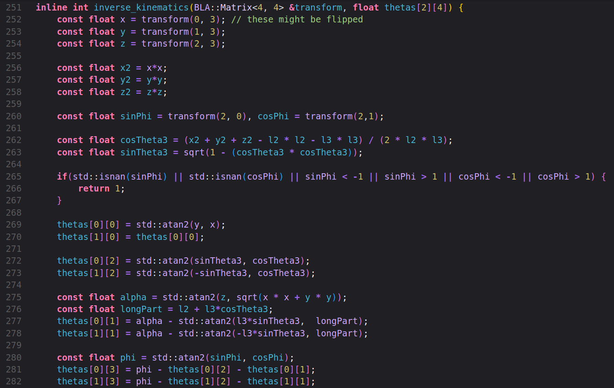

I took on this project to test the skills I learned in my robotics courses. My manipulator rotates at the base and has 3 planar revolute joints, is moved by six servo motors, and controlled by an arduino that does all kinematics equations and trajecory planning.
Input is handled with a webserver that runs on the other core of my Arduino, the details of which are helplessly boring.
This project was a major inspiration to Dr. Sterling McLeod of NC State University, who hired me as a research assistant to help him use this robot as a learning platform for his "Intro to Robot Motion Planning" course.
My job was to develop the environment for the robot. In order to use this robot in fun projects, I experimented with several ways that the robot can use low-cost ESP-32-CAM boards in order to get depth perception and geometry estimation. While I did learn a lot about stereo image processing from these endeavors, such an inexpensive camera platform was deemed too sophistocated and underpowered to be used for reliable object detection.
Our new plan is to use ArUcos of known size in order to label things in the environment such as the robot, the ground plane, and any relevant objects in the robot's "playpen" for any given assignment. Knowing the sizes of these ArUcos is useful as it allows us to use forward kinematics and transform matrices to completely describe the robot's workspace with only a single camera.